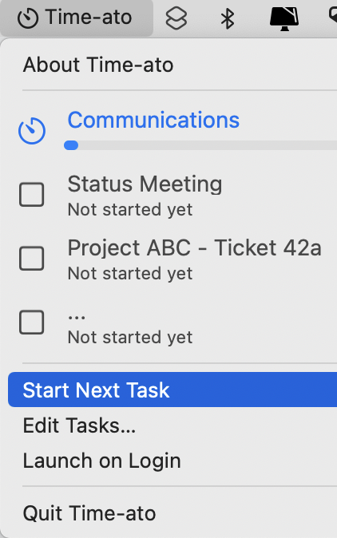

8.与定时器、警报和通知一起工作¶
在上一章中，你使用AppKit设置了一个菜单栏应用。你设计了一个自定义视图来在菜单中显示应用程序的任务，并对菜单进行监控，以便根据需要添加和删除这些任务。
到目前为止，这个应用程序还没有对数据做任何积极的处理，但这将会改变！现在，你将会把菜单连接起来。
现在，你将把故事板上的菜单项连接到你的代码中，并运行一个计时器来跟踪任务和休息的进展。然后，你将研究使用系统警报和本地通知来告诉用户正在发生的事情。
链接出口和行动¶
你已经创建了一些静态的菜单项，以允许对应用程序进行控制，但它们还没有做任何事情。第一个任务是将它们与代码连接起来，这样你就可以访问它们并使它们工作。
在Xcode中，打开上一章的项目或者打开本章下载资料中的starter项目。
打开Main.storyboard，在Document Outline中完全展开Application Scene。在项目导航器中Option-click AppDelegate.swift，在第二个编辑器中打开它。
现在，你有一个菜单项，标题为Start Next Task，但是，如果一个任务正在运行，它应该有一个不同的标题。这意味着你需要把它连接到AppDelegate，这样你就可以通过编程访问这个菜单项。因为你想让这个菜单项做一些事情，所以你也需要将AppDelegate方法连接到它。
当你从Storyboard Control-drag到.swift文件时，Xcode提供了创建一个Outlet或Action。一个出口给你一个名字，你可以用它来指代故事板上的一个对象。一个动作则相反，给故事板上的对象一个可以调用的方法。方便的是，如果你Control-drag到你的类的顶部，Xcode认为你想做一个出口，如果你Control-drag到更下面，它认为是一个动作。
你还不打算使用所有的连接，但是既然你在这里，把它们都设置好是有意义的。
连接出口¶
Control-drag从Start Next Task到你声明menuManager的下面。不要松手，直到你看到Insert Action or Outlet的工具提示。你可能需要将鼠标指针向下移动一行才能到达那里：
当对话框弹出时，确保Connection被设置为Outlet，Type是NSMenuItem。将Name设置为startStopMenuItem并点击连接：
如果需要的话，在新添加的一行后面添加一个空行，使代码看起来更整齐。现在它看起来像这样：

鼠标移到行号沟里的黑色圆球上。它突出了故事板中的Start Next Task项目，以确认连接。
使用同样的技术将Launch on Login菜单项连接到一个叫做launchOnLoginMenuItem的出口。
这些是你唯一需要的出口，现在你要创建动作。在文件的末尾添加一些空行，但仍在AppDelegate内。这样你就有地方可以拖入。
构建动作的线路¶
Control-drag从Start Next Task到这个空白处，连接一个叫做startStopTask的动作：
以同样的方式，做出这些其他行动：
Edit Tasks…—showEditTasksWindowLaunch on Login—toggleLaunchOnLogin
AppDelegate的结尾现在看起来是这样的：

现在，当应用程序运行时，选择这些静态菜单项中的一个就会调用其连接方法。这些方法还没有做任何事情，但你已经做了链接。
你现在已经完成了所有的连接，所以关闭二级编辑器，继续让它们工作。
管理任务¶
标准的苹果应用程序架构是MVC，它代表Model View Controller。模型是数据，视图是显示数据的方式，控制器位于中间。不幸的是，这很容易使控制器承担太多的责任。这导致了一个幽默的缩写新定义：Massive视图控制器。
在这个应用程序中，你根本没有一个视图控制器，但这意味着很多事情都要通过应用程序的委托来完成。但就像MVC一样，你要避免大规模的应用委托。没有人想让自己的应用程序成为MAD。:］
在上一章中，你做了一个MenuManager类来分离菜单委托和其他菜单处理代码。你使用了样本数据集Task.sampleTasksWithStatus，其中一些任务已经完成，一个正在进行中。这在你设计自定义视图的时候很有用。现在你要控制这些任务，你将使用Task.sampleTasks，其中没有一个任务开始或完成。
首先，为了管理这些任务的时间，制作另一个管理器类。在项目中添加一个新的Swift文件，命名为TaskManager.swift。
在你的新文件中加入这段代码：
class TaskManager {
var tasks: [Task] = Task.sampleTasks
}
这就设置了这个类，并给它一个属性来保存任务，将其设置为no status样本数据集。
接下来，为了使用你的新类，打开MenuManager.swift并将var tasks = Task.sampleTasksWithStatus替换为：
let taskManager = TaskManager()
现在，向下滚动到showTasksInMenu()，可以看到这个变化破坏了一些东西。你的MenuManager再也找不到它的任务了。
将for task in tasks {行替换为：
for task in taskManager.tasks {
所以现在menuManager可以再次访问任务，但是通过另一个类。你有了一个新的管理器类，它可以处理任务和它们的计时器，而不会让应用程序委托或菜单管理器变得混乱。
计时器¶
现在终于到了谈论定时器的时间了。毕竟，一个不能为任何事情计时的定时器应用有什么意义呢？］
有两种使用Timer类的可能性。
- 创建一个
scheduledTimer，可以在一个重复的时间表上执行一个动作。 - 使用
Combine来publish一个定时器，该定时器发出一连串的Date对象。
这两种方法都可以使用，但对于这个应用程序，你将使用Combine，因为它是一个更新、更有趣的技术。
打开TaskManager.swift并添加一个import语句：
import Combine
这让你可以访问Combine框架。
接下来，将这个属性添加到TaskManager中：
var timerCancellable: AnyCancellable?
你将创建一个订阅给Timer.TimerPublisher，并将其分配给timerCancellable。当一个订阅的工作完成后，取消它是很好的做法，以释放资源。一个AnyCancellable对象在其去初始化时自动调用cancel()。任务完成了! 另外，你必须保持对发布者的引用，否则它就不会再给你提供事件了。
最后，添加这个方法，让你启动定时器：
func startTimer() {
// 1
timerCancellable = Timer
.publish(
// 2
every: 1,
// 3
tolerance: 0.5,
// 4
on: .current,
// 5
in: .common)
// 6
.autoconnect()
// 7
.sink { time in
print(time)
}
}
这个方法有多的细节：
- 创建一个
Timer.TimerPublisher，它是一个专门的Combine发布器，每隔一段时间就会发布当前日期。 - 设置事件之间的时间间隔，单位是秒。
- 指定容忍度。这个应用程序不需要太精确，所以半秒就可以了。
- 每个
Timer都必须在一个RunLoop上运行，这是一个处理来自窗口、鼠标、键盘等输入的对象。current RunLoop使用当前线程，这对这个定时器来说是完美的。 - 现在你到了
RunLoop.Mode，事情变得有点不同。通常，你会选择default模式，但如果你为这个应用程序这样做，菜单在打开时将无法更新。使用common可以使菜单在打开或关闭时都能更新。 - 一个
Timer.TimerPublisher是一个ConnectablePublisher。这意味着它不会发布事件，直到订阅者调用它的connect()方法。autoconnect()操作者在第一个订阅者订阅时自动连接。 - 为了从发布者那里接收数据，你使用
sink创建一个subscription。它接收发布的日期，现在，只把它们打印到控制台。以后，你会调用TaskManager方法，这就是为什么你在声明timerCancellable时不能简单地初始化它。
Note
common RunLoop.Mode是一个伪模式，将计时器注册为default、modalPanel和eventTracking模式。
modalPanel模式只在保存或加载面板等对话框打开时运行。eventTracking模式只在事件被追踪时运行，例如当菜单被打开时。default模式只在其他条件都不生效时运行。
common模式结合了所有这些条件，无论如何都要运行。这允许Timer一直保持发布。
为了测试你的新定时器，在TaskManager中添加这个方法：
init() {
startTimer()
}
构建并运行该应用程序，然后检查Xcode控制台，看到出现了一个日期列表，每秒钟一个：
那是一个密集的部分，但你最后已经有了一个活跃的组合计时器，现在，你可以设置它来工作，而不是打印日期。而且你也清楚地知道我是什么时候写的这一节。 :]
追踪定时器的状态¶
当运行这个应用程序时，定时器可以处于四种状态中的一种。
- 正在运行一个任务。
- 在短暂的休息中。
- 处于长时间休息状态。
- 等待：没有任务正在运行，用户也没有在休息。
当你想跟踪像这样一组相互关联的状态时，枚举是一个很好的选择。但Swift枚举可以有超级能力：关联值。
这些状态中的大多数都有一些数据，你需要将它们联系起来。如果你正在运行一个任务，是哪个任务？而对于一个断点，断点是什么时候开始的？
Swift允许你在枚举中为案例附加一个关联值。这些值不一定都是同一类型的，也不是所有的案例都要有一个。
打开本章下载资料中的assets文件夹。找到TimerState.swift并将其拖入项目导航器中的Models组。确保勾选Copy items if needed和Time-ato目标。
看一下这个文件。它设置了四个可能的状态，但是对于runningTask，它使用一个关联值来存储任务的索引。而两个断点中的每一个都有一个关联值来存储开始时间。
activeTaskIndex计算属性使用与runningTask相关的taskIndex，如果一个任务正在运行，则返回一个索引号，如果没有则返回nil。这演示了如何使用switch来获取枚举中活动情况的关联值。
breakDuration的计算属性根据类型计算出预期的中断时间。
你很快就会在跟踪用户的任务和休息时间的进展时使用这些，所以打开TaskManager.swift并添加这个属性：
var timerState = TimerState.waiting
这就把timerState默认为waiting。
启动和停止任务¶
还是在TaskManager.swift中，添加这些方法来启动和停止任务：
// 1
func toggleTask() {
// 2
if let activeTaskIndex = timerState.activeTaskIndex {
stopRunningTask(at: activeTaskIndex)
} else {
startNextTask()
}
}
func startNextTask() {
// 3
let nextTaskIndex = tasks.firstIndex {
$0.status == .notStarted
}
// 4
if let nextTaskIndex = nextTaskIndex {
tasks[nextTaskIndex].start()
timerState = .runningTask(taskIndex: nextTaskIndex)
}
}
func stopRunningTask(at taskIndex: Int) {
// 5
tasks[taskIndex].complete()
timerState = .waiting
}
那么，这些方法在做什么？
- 你很快就会设置
startStopMenuItem动作来调用这个方法。 - 使用
timerState来检查一个任务是否正在运行。如果是，它就会停止，如果不是，它就会启动下一个。 - 要启动下一个任务，找到列表中第一个状态为
notStarted的任务的索引。 - 如果有一个有效的任务，就启动它，并将
timerState设置为runningTask，存储索引号。 - 要停止一个正在运行的任务，使用它的
complete()方法并将timerState设置为waiting。
现在你已经有了这些方法，继续从菜单中调用它们。
在AppDelegate.swift中，将此插入startStopTask(_:)。
menuManager?.taskManager.toggleTask()
建立并运行，打开菜单并选择Start Next Task。等待几秒钟，然后再次打开菜单，看到第一个任务正在进行。再次选择Start Next Task，将第一个任务标记为完成。

还有相当多的功能需要实现：更新菜单，检查完成任务的计时器，以及处理休息。但你真的开始看到这一切了。
更新菜单标题¶
你需要更新菜单的三个部分：菜单标题、startStopMenuItem标题和任务本身。
首先看一下菜单标题，它应该根据计时器的状态而改变。
打开你下载的assets文件夹，使用相同的设置，将TaskManagerExt.swift添加到你的项目。这给了你一个TaskManager的扩展，有一个计算属性和一个方法。
计算属性检查timerState并返回一个元组，其中包含一个合适的菜单标题和一个用作菜单图标的图片名称。它使用所有的关联值来做这件事。
该方法使用DateComponentsFormatter来将任务或休息的剩余时间格式化为分和秒。你将日期格式化器声明为一个全局属性，这样这个方法就不必每秒钟都创建一个新的格式。
TaskManager使用这些来更新菜单标题，但所有与菜单相关的方法都在AppDelegate.swift中。事实上，你很快就会需要AppDelegate中的另一个方法，所以现在就添加其存根：
func updateMenu(
title: String,
icon: String,
taskIsRunning: Bool
) {
}
回到TaskManager.swift中，你需要使用AppKit来访问AppDelegate，所以在文件顶部的其他导入中加入这一行：
import AppKit
接下来，把这个方法添加到TaskManager中：
func checkTimings() {
// 1
let taskIsRunning = timerState.activeTaskIndex != nil
// more checks here
// 2
if let appDelegate = NSApp.delegate as? AppDelegate {
// 3
let (title, icon) = menuTitleAndIcon
// 4
appDelegate.updateMenu(
title: title,
icon: icon,
taskIsRunning: taskIsRunning)
}
}
这又有什么作用呢？
- 检查是否有任何任务正在运行。
- 获取对该应用程序的委托的引用。
- 使用
TaskManagerExt.swift中的属性，为菜单找到合适的标题和图标。 - 将这些信息传递给你在
AppDelegate中的新方法。
现在，回到AppDelegate.swift实现新方法。用这段代码替换你的存根：
func updateMenu(
title: String,
icon: String,
taskIsRunning: Bool
) {
// 1
statusItem?.button?.title = title
statusItem?.button?.image = NSImage(
systemSymbolName: icon,
accessibilityDescription: title)
// 2
updateMenuItemTitles(taskIsRunning: taskIsRunning)
}
func updateMenuItemTitles(taskIsRunning: Bool) {
// 3
if taskIsRunning {
startStopMenuItem.title = "Mark Task as Complete"
} else {
startStopMenuItem.title = "Start Next Task"
}
}
这两种方法：
- 使用提供的标题和图标名称来配置状态项的按钮。
- 调用第二个方法来更新菜单项的名称。
- 改变
startStopMenuItem以显示一个适当的标题。
这个谜题只剩下一块了。回到TaskManager.swift，在startTimer()中，将.sink { ... }替换为：
.sink { _ in
self.checkTimings()
}
现在你可以构建和运行了。打开菜单，选择Start Next Task。菜单标题现在显示你的任务标题，并倒数着剩余时间。该菜单项现在不再是Start Next Task，而是被标记为Mark Task as Complete。

更新任务¶
你已经完成了所需的三个更新中的两个，但显示活动任务的菜单项只在菜单打开时或你把鼠标指针移到它上面时才更新。
还记得在上一章中，你为任务菜单项创建了自定义视图吗？你是通过编程来实现的，以便于更新。现在，你将看到结果。
在MenuManager.swift中，添加这个：
func updateMenuItems() {
// 1
for item in statusMenu.items {
// 2
if let view = item.view as? TaskView {
// 3
view.setNeedsDisplay(.infinite)
}
}
}
在这些行中，你：
- 循环浏览
statusMenu中的每个菜单项。 - 检查它是否有一个
TaskView类型的视图。 - 如果有，告诉该视图它需要更新其整个显示。这将触发视图的
draw(_:)方法，用当前的任务数据刷新其显示。你不需要重新创建视图，也不需要重新分配任务。你只需告诉视图它需要刷新，它就会完成所有的工作。
现在，要使用这个方法，回到AppDelegate.swift，在updateMenu(title:icon:taskIsRunning:)的末尾添加这个：
if menuManager?.menuIsOpen == true {
menuManager?.updateMenuItems()
}
只有在菜单打开的情况下，菜单项才需要更新。如果是的话，这将调用你刚刚添加的MenuManager方法。
构建并再次运行。开始下一个任务，然后打开菜单，让它保持开放。现在你可以看到进度条随着计时器的倒数而前进。

现在的视觉效果都很好。你的菜单显示了正在运行的任务的标题和剩余时间，而且任务菜单项也在实时更新。
接下来，是时候解决当一个任务完成时该做什么了。
检查定时器¶
这是TaskManager的另一项工作，所以打开TaskManager.swift并添加这些方法：
// 1
func checkForTaskFinish(activeTaskIndex: Int) {
let activeTask = tasks[activeTaskIndex]
if activeTask.progressPercent >= 100 {
// tell user task has finished
stopRunningTask(at: activeTaskIndex)
}
}
// 2
func checkForBreakFinish(startTime: Date, duration: TimeInterval) {
let elapsedTime = -startTime.timeIntervalSinceNow
if elapsedTime >= duration {
timerState = .waiting
// tell user break has finished
}
}
// 3
func startBreak(after index: Int) {
let oneSecondFromNow = Date(timeIntervalSinceNow: 1)
if (index + 1).isMultiple(of: 4) {
timerState = .takingLongBreak(startTime: oneSecondFromNow)
} else {
timerState = .takingShortBreak(startTime: oneSecondFromNow)
}
}
这里发生了什么？
- 获取活动任务，看看它是否已经用完了时间，如果是，就停止它。
- 如果用户正在休息，检查休息是否结束并重置
timerState。timeIntervalSinceNow返回现在和另一个Date之间的秒数。如果另一个Date是过去的，这就是负数，这就是为什么你把elapsedTime设置为负数的原因。 - 要开始一个新的休息时间，检查它应该是长的还是短的，设置
timerState并关联开始时间，你将其设置为未来一秒。这使得定时器开始显示它的全部时间。
为了使用这些新的能力，你需要改变几个现有的方法。
在stopRunningTask(at:)的末尾加上这个：
if taskIndex < tasks.count - 1 {
startBreak(after: taskIndex)
}
除非你刚刚停止了最后的任务，否则这将开始一个中断。
接下来，在checkTimings()中，将// more checks here替换为：
switch timerState {
case .runningTask(let taskIndex):
// 1
checkForTaskFinish(activeTaskIndex: taskIndex)
case
.takingShortBreak(let startTime),
.takingLongBreak(let startTime):
// 2
if let breakDuration = timerState.breakDuration {
checkForBreakFinish(
startTime: startTime,
duration: breakDuration)
}
default:
// 3
break
}
你在做什么？
- 如果有一个任务正在运行，检查它是否已经运行了整个时间。
- 当用户处于任何形式的休息状态时，从
timerState中获取休息的持续时间，并使用该时间和相关的开始时间，来查看休息是否结束。 - 开关必须是详尽的，但如果
timerState是waiting，你不想做任何事情，所以使用break来满足编译器。
有了这些改变，你就可以再次构建和运行了。启动下一个任务，在它倒计时的时候等待。TaskTimes在调试时使用短持续时间，所以你只需等待两分钟。
Note
如果你觉得两分钟的等待时间还是太长，可以在TaskTimes.swift中调整调试模式taskTime。当你在那里的时候，你也可以缩短休息时间。
当任务时间到了，任务菜单项显示为完成，菜单标题切换为短暂的休息，建议你给自己买一杯非常快的咖啡。
你必须手动开始下一个任务，你可以在休息时或休息后进行，但你可以通过选择Mark Task as Complete更快地结束它。逐步完成任务，直到你完成第四项任务。现在，该应用程序建议你在长时间休息时去散步。

这个应用程序的最后一部分计时是告诉用户发生了什么，并在每次休息后提出开始下一个任务。
创建警报¶
你将使用NSAlert来与你的用户交流。这是一个标准的对话框，你可以提供一个标题、一条信息，还可以选择提供一个按钮标题列表。在UIKit编程中，你会使用UIAlertController来做这个。
进入下载材料中的assets文件夹，使用常规设置，将Alerter.swift拖入你的项目。打开该文件，看看它的方法：
taskComplete(title:index:)当一个任务的定时器用完时，显示一个警告。它计算出下一个休息类型并在消息中显示。allTasksComplete()与第一个方法类似，但它在用户完成最后一个任务后显示警报。breakOver()是一个不完整的方法，显示一个警报，给出立即开始下一个任务的选项。openAlert(title:message:buttonTitles:)是一个被所有其他方法调用的方法，实际显示警报。这个也是不完整的。
首先填补最后一个方法openAlert(title:message:buttonTitles:)中的空白。将其单行return .alertFirstButtonReturn替换为：
// 1
let alert = NSAlert()
// 2
alert.messageText = title
alert.informativeText = message
// 3
for buttonTitle in buttonTitles {
alert.addButton(withTitle: buttonTitle)
}
// 4
NSApp.activate(ignoringOtherApps: true)
// 5
let response = alert.runModal()
return response
这如何显示警报？
- 创建一个标准的
NSAlert。 - 将主要的
messageText设置为提供的title，并使用message参数来设置不太突出的informativeText。 - 为
buttonTitles中的每个字符串添加一个按钮，如果有的话。如果没有，像allTasksComplete()一样，警报显示一个OK按钮。 - 确保应用程序处于活动状态。还记得你打开的应用程序窗口是如何在你尝试时隐藏了关于盒子的吗？这就把应用带到了前面，所以警报就不会像关于框那样被隐藏。
- 显示警报并返回一个结果，表明用户点击了哪个按钮。
返回的类型是NSApplication.ModalResponse。这是alertFirstButtonReturn用于添加的第一个按钮，alertSecondButtonReturn用于下一个，alertThirdButtonReturn用于第三个。
Note
一个有三个以上按钮的警报可能不是很好的用户界面，但如果你的应用程序需要它呢？与其使用方便的alert...ButtonReturn，你可以检查NSApplication.ModalResponse的rawValue。这对于第一个按钮是1000，第二个按钮是1001，以此类推。
当任务完成时使用的两个方法只提供信息，并不关心结果。所以openAlert(title:message:buttonTitles:)被标记为@discardableResult所以调用者没有义务访问返回值。
breakOver()方法确实想得到一个结果。为了完成它，将return .alertSecondButtonReturn改为：
// 1
let buttonTitles = ["Start Next Task", "OK"]
// 2
let response = openAlert(
title: "Break Over",
message: message,
buttonTitles: buttonTitles)
// 3
return response
以下是你要做的事情：
- 设置按钮的标题。第一个是默认的按钮，点击它或按下
Return键会送回alertFirstButtonReturn。 - 使用同样的方法来显示警报，但这次要读取返回值，表明用户点击了哪个按钮。
- 将该值返回给调用者。
显示警报¶
警报代码现在都在那里了，但你仍然需要建立一个Alerter的实例，并添加使用它的调用。
首先，打开TaskManager.swift并添加这个属性：
let interaction = Alerter()
接下来，找到checkForTaskFinish(activeTaskIndex:)并将/// tell user task has finished替换为：
// 1
if activeTaskIndex == tasks.count - 1 {
// 2
interaction.allTasksComplete()
} else {
// 3
interaction.taskComplete(
title: activeTask.title,
index: activeTaskIndex)
}
这有什么作用？
- 检查刚刚结束的任务是否是列表中的最后一个任务。
- 如果是，调用
allTasksComplete()。 - 如果还有更多的任务要做，调用
taskComplete(title:index:)，传入任务的标题和它的索引。这可以使警报显示任务的信息和后续的中断类型。
这是对任务结束的处理，所以接下来你可以处理中断的结束。
向下滚动到checkForBreakFinish(startTime:duration:)。在这个方法中，将// tell user break has finished替换为:
let response = interaction.breakOver()
if response == .alertFirstButtonReturn {
startNextTask()
}
这将显示breakOver()警报，检查用户点击了哪个按钮，如果要求的话，启动下一个任务。
所有这些都完成后，构建和运行并启动第一个任务。等到它超时，你会看到这个：

你的信息都在那里，但如果有一个应用图标，看起来会好很多。在项目导航器中打开Assets.xcassets并删除AppIcon。再次查看下载的assets文件夹，找到AppIcon.appiconset。把它拖到你的资产列表中来安装这个图标。按Command-Shift-K来清理构建文件夹。这可以确保Xcode应用新的图标。
Note
如果Xcode隐藏了文件扩展名,你会在项目导航器中看到Assets。如果你在Finder中隐藏了文件扩展名，在assets文件夹中寻找AppIcon。
再次构建并运行，启动第一个任务，然后使用Mark Task as Complete来直接跳到断点。
在中断完成后，你会得到这个更好看的提示：
点击默认按钮，立即开始下一个任务。而现在，你的应用程序是完全互动的，信息量很大。
使用本地通知¶
你可能想知道本地通知是否是与用户沟通的更好选择。
为了测试这一点，从assets文件夹中添加Notifier.swift。这有与Alerter相同的三个方法，但是breakOver()是不同的，因为通知不会等待响应。还有一些特定的通知方法，用于检查权限，设置提供可点击按钮的动作，观察响应，并确保通知可以在菜单打开时出现。
macOS中的通知看起来有所不同，但代码与你在iOS中使用的完全相同。
要切换到使用通知，你必须在TaskManager.swift中做一些改变。
首先，注释掉let interaction = Alerter()，然后添加这个，将你的交互改为新类：
let interaction = Notifier()
这两个已完成的任务调用可以不做任何改动，但你必须用以下方法替换checkForBreakFinish(startTime:duration:)。它包括两个选项的代码，所以你可以轻松地交换：
func checkForBreakFinish(startTime: Date, duration: TimeInterval) {
let elapsedTime = -startTime.timeIntervalSinceNow
if elapsedTime >= duration {
timerState = .waiting
// Uncomment if using Alerter
// let response = interaction.breakOver()
// if response == .alertFirstButtonReturn {
// startNextTask()
// }
// Uncomment if using Notifier
interaction.startNextTaskFunc = startNextTask
interaction.breakOver()
}
}
你不需要等待用户点击按钮，而是传递给Notifier一个函数，让它在需要启动下一个任务时调用。然后你调用breakOver()，不期望有结果。
构建并运行，启动下一个任务并等待它完成。应用程序现在试图显示一个通知。这是你第一次在启用通知的情况下运行应用程序，所以现在你会看到这个通知在请求许可：
把鼠标放在这个通知上，看到Options菜单，选择Allow。
那么，你的任务完成后的通知在哪里呢？点击菜单栏右上方的时钟，滑出你最近的通知。它就在这里：
它被权限请求通知隐藏在通知面板中。
现在等待休息时间结束，你会看到这个：

同样，你必须把鼠标放在通知上，才能看到Start Next Task选项。如果你点击这个按钮，下一个任务就开始了。如果你点击通知中的其他地方，它就会消失而不启动你的任务。
Note
如果你在短暂休息结束前没有Allow通知，你可能看不到Break complete的通知。要再次尝试，请将TIME-ATO从允许的应用程序列表中删除。打开System Preferences ▸ Notifications & Focus，在应用程序列表中选择TIME-ATO并按Delete。
挑选一个用户互动¶
你认为哪个更好：警报或通知？
它们都能发挥作用，都能告诉用户正在发生什么，都能让用户在休息后开始下一个任务。
主要的区别是，警报是即时的和侵入性的。在你确认之前，它们一直在你的屏幕前面和中心。通知则更多地发生在后台。如果你在几秒钟内没有回应它们，它们会悄悄地消失在通知面板中。如果你没有注意到一个通知的首次出现，你可能几天都不会注意到它。
虽然两者都有用武之地，但这个应用程序的警报效果要好得多。它们迫使你注意，所以你更有可能在你应该休息的时候休息一下。
所以把checkForBreakFinish(startTime:duration:)里面的注释改一下，然后把interaction改回Alerter()，就可以回到你原来的位置。
关键点¶
- 对于
AppKit应用程序，就像UIKit应用程序一样，你必须在故事板和代码之间建立联系。 - 有两种主要的方法来创建一个计时器。这个应用程序使用了一个
Combine TimerPublisher。 - 使用枚举是跟踪你的应用程序中不断变化的状态的一个好方法。
- 枚举情况可以有相关的值，这使它们更加强大。
- 你可以定期更新菜单标题和菜单项，即使菜单已经打开。
- 有了自定义的
NSView，你只需要告诉它它的显示需要更新，就可以触发完全重绘。 - 系统警报提供了一种与用户沟通的标准方式。
- 本地通知是一种与用户联系的方式，其干扰性较小。
接下来去哪？¶
在本章开始时，你的应用程序在状态栏菜单中显示任务数据，但没有其他事情发生。
现在，该应用程序有一个完整的计时系统，有警报或通知与用户沟通。
缺少的功能是编辑任务并保存它们。在下一章，你将学习如何在AppKit应用中使用SwiftUI视图。你将会编辑任务，并且你会发现更多关于Mac应用沙盒的信息。
要了解更多关于Combine的信息，请看Combine: Getting Started，其中有一个关于计时器的章节。Combine在任何苹果平台上的工作原理都一样。要深入了解Combine，请查看我们的书[Combine: Asynchronous Programming with Swift]（https://bit.ly/3F0aeZ5）。
如果你想了解更多关于本地通知的信息，请查看 [Local Notifications: Getting Started] (https://bit.ly/3EKQFnH)。它使用的是iOS，但完全相同的代码也适用于macOS应用。